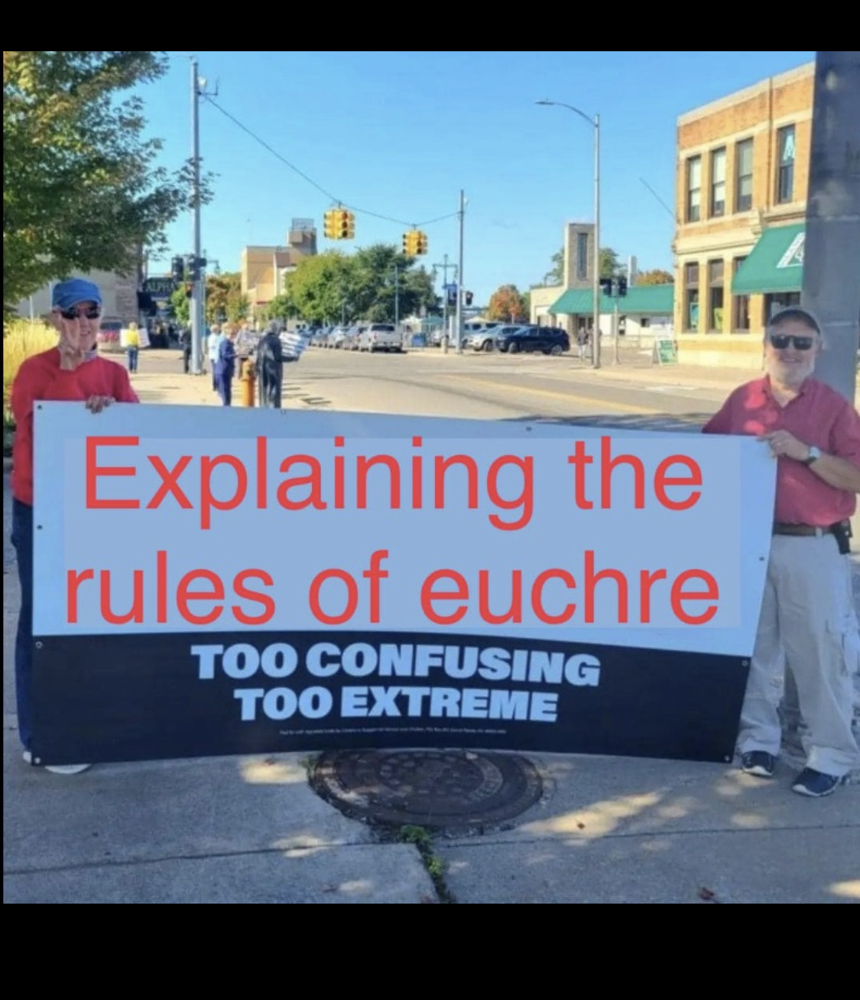

"Baby blue revisited"
| DH Issue: | #3 |
| Created: | 2/5/2023 |
| Updated: | 2/6/2023 |
| Author: | Sean Quigley |
| Location: | 48.249421,16.363925 |
Song for the second district
Who would you dance with
If the world was ending?
And we were walking in the park
Who would you kill
With your time machine?
What would you say about a walk.
High as
Nazi concrete
We’re gonna throw a party
In the park
Sometimes you speak
Just as softly
As snow goes crinkle on the palms
A Lunchtime promenade
We’re walking Arm in arm
We went Walking in the park today
And we brought a deck of cards
Friday night in Hernals

War on forms
Whua, fhlowahs?
Fuh me??
I do declare
A war on forms
Here’s to feeling
Good all the time
Birthday at the zoo
What if we spent
Your Birthday at the zoo?
Just
Me and you?
Swedish lessons
My skills
Are getting better
On guitar
And I’m learning how to taste a drum
You showed me
how to count your knuckles like they’re months,
I wrote you
This poem
Do your wikipedia homework
(A few characters from the book of History )

was a great lover of the novels of jane austen,
of the Sarawak prince Badruddin,
of teenage Charles T. C. Grant, grandson of the seventh Earl of Elgin, who supposedly ‘reciprocated’ (…)
And he ruled — brutally — as First White Rajah
of Sarawak in Borneo,
and was fêted in London despite (or rather for?) his extreme anti-piracy methods.
his successor, his sister’s eldest son,
John Brooke Johnson Brooke

married the same earl’s (elgin’s) granddaughter, anne Grant, at Kilgrastron in Scotland in 1856,
and
died in Hounslow in 1868 after a long illness, but was buried in his father's churchyard at his childhood home of Whitelackington

omw2fyb
now this earl,
the 7th earl of elgin & 11th of Kincardine,
Thomas Bruce,
is the same guy
who ‘procured’ the sculptures pilfered from the Parthenon,
in Acropolis of athens,
also known as the
ELGIN MARBLES … !
which caused john keats ‘pain’ when he viewed them !
as they reminded him he had to die!
On Seeing the Elgin Marbles
By John Keats
My spirit is too weak—mortality
Weighs heavily on me like unwilling sleep,
And each imagined pinnacle and steep
Of godlike hardship tells me I must die
Like a sick eagle looking at the sky.
Yet ’tis a gentle luxury to weep
That I have not the cloudy winds to keep
Fresh for the opening of the morning’s eye.
Such dim-conceived glories of the brain
Bring round the heart an undescribable feud;
So do these wonders a most dizzy pain,
That mingles Grecian grandeur with the rude
Wasting of old time—with a billowy main—
A sun—a shadow of a magnitude.
Fantasy baseball / blog brunch
[a poem about memories]
The bushmiller principle (lessons from nancy)

The other jihad

Making fun of myself for not being cool
I stand accused
of shooting at mountains.
I stand
nearly every brand of chip.
I stand, hoot, reload,
greet the top of the range
with a “top’othamornin’”
and a blended blueberry-
spinach yoghurt shake.
I stand for nothing
in hopes of falling
for any quirky curly-headed
cross-eyed
rom-com lead
without having to work
to improve myself!
Many panthers died
to bring you Ben and Jerry’s
at subzero temps.
I stand for the chill bros with chill gigs.
I stand for the news,
and whenever I think of the pledge of allegiance.
I stand
with Taiwan,
with Switzerland and Somaliland.
Hochsommer in Wien-Meidling
Hochsommer in Wien-Meidling
und es ist Hochbetrieb im Cafe Amigo, Hochbetrieb
im Cafe Auszeit,
Hochbetrieb in den finsteren Hinterzimmern
des Cafe Nostaljÿa, Hochbetrieb beim Berndl,
höchstes Getümmel, es strömen Gäste mit dicken Augen und haarigen Unterbeinen überall ein,
die Gäste lassen sich verspeisen und verschwenden Gedenken,
die Gäste verlangen immer wieder eine Melange,
Aperol g'spritzt, Apfelsaft und singen laut,
wobei sie nicht gern singen,
ihre Augen werden immer dicker, sie rasieren sich die Beine,
die Gäste, mit den rohen Scherben von zerbrochenen Schnappsflaschen,
sie schreien sich gegenseitig die dunkelste Misverständnisse an,
Überall in den Kaffeehäusern Wiens herrscht Geschrei,
die Gäste lassen sich verspeisen und schreien und verspeisen
eine verlorene Zeit
eine vergessene Welt
sie werden das unfassbare vom Leben
in einer dicken Gerstlsuppe ertrinken lassen
und sich noch eine Melange bestellen.
View from my back window

Thank you for reading Donut Holes issue #3–
BABY BLUE REVISITED
this secret unpublished communication has been approved by :
Real revolutionary patriots✅
All communications are published by
✨donut holes worldwide 2023 ✨
“For a relaxing choice, make it
a DONUT HOLES